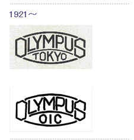
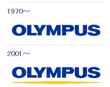

The Olympus brand was introduced in February 1921.
This logo was used for microscopes and other products.
Brochures and newspaper ads for cameras also sported this logo.
The "OLYMPUS TOKYO" logo is still in use today.
There was a period in which OIC was used instead of TOKYO in the logo.
OIC stood for Optical Industrial Company,
which was a translation of Olympus' Japanese corporate name at that time.
This logo was used for the GT-I and GT-II endoscopes, among others.

This logo, used from 1970 to 2000,
was designed to give impressions of quality and sophistication.
The yellow line underneath the logo is called the "Opto-Digital Pattern"
and it represents light and boundless possibilities of digital technology.
It symbolizes dynamic and innovative nature of Opto-Digital Technology and Olympus Corporation.
This logo is called the Communication Symbol of Olympus and it represents Olympus' brand image.